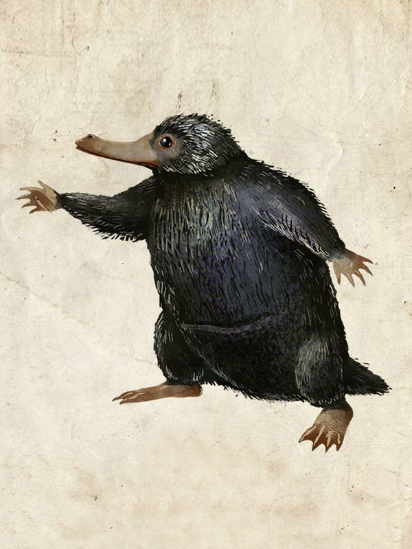
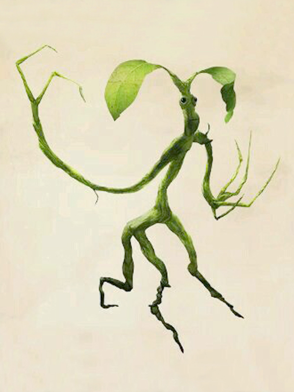
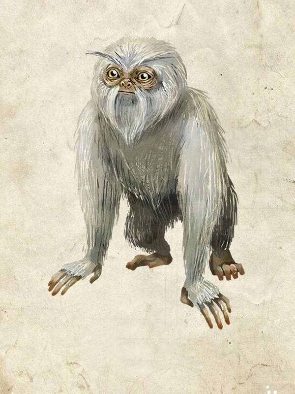
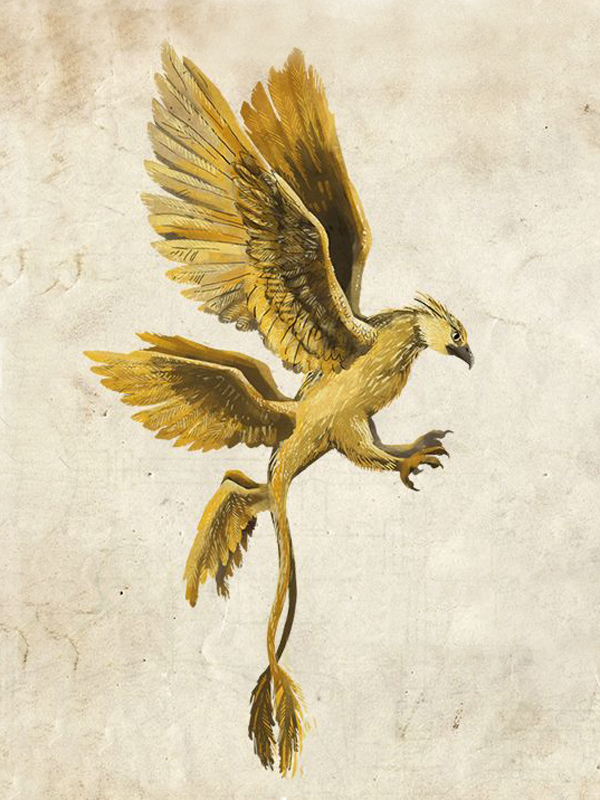
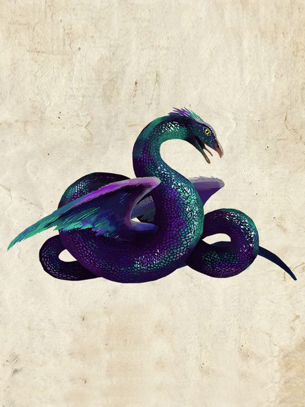

Animais
Fantásticos
e Onde Habitam
- 

- 
- 
- 
- 
Pelúcio
O Pelúcio (em inglês Niffler) é uma criatura com um longo focinho e um casaco de pele negra e fofa. Eles são atraídos por coisas brilhantes, o que os tornam maravilhosos para localizar aquelas coisas que tomos amam, as jóias.
Mas isso também significa que eles poderem causar estragos se fossem mantidos (ou soltos) dentro de casa. Os pelúcios em geral são inofensivos.
Rapinomônio
Não se deixe enganar pelo nome, não há melhor maneira de se chamar essa mistura de réptil e borboleta. O Rapinomônio se assemelha a um casulo pontiagudo em sua forma latente e pode estender suas belas e estranhas asas para alcançar vôo.
Essa criatura esquisita e majestosa pode ser incrivelmente perigosa, uma vez que é capaz de sugar cérebros (isso mesmo!) e se for propriamente treinada, seu veneno pode ser usado para apagar memórias ruins. Obliviate, alguém ?
Tronquilho
Tronquilhos são difíceis de perceber em um ambiente natural. Newt Scamander anda com pelo menos 4 desses pequenos na bolsa, e declarou ter um carinho especial por um em particular, chamado Pickett, um Tronquilho que tem uma conexão especial com Scamander e anda em seu bolso de cima.
Eles comem apenas insetos e são criaturas doces e intensamente ciumentas, mas extremamente leais. Podem ser muito úteis de se ter por perto, principalmente quando há cadeados para abrir!
Seminviso
O Seminviso é uma espécie de orangotango, com pêlo prateado e grandes olhos pretos. Seu pêlos podem ser prolongados e transformados em capas de invisibilidade, tornando seu couro bastante valioso. Ele não tem apenas a habilidade de se tornar invisível, mas também possui habilidades pré-cognitivas, o que o torna difícil de ser capturado.
O único jeito de capturar um Seminviso é fazer algo completamente imprevisível. Eles são as criaturas mais pacíficas, mas vão te dar um belo beliscão se provocados ou caso se sintam ameaçados.
Pássaro Trovão
O Pássaro Trovão é um dos símbolos de uma das quatro casas da Escola de Magia e Bruxaria de Ilvermony. A criatura é nativa do Arizona e sua cabeça lembra a de um Hipogrifo. Suas asas são poderosas o suficiente para criar tempestades e elas resplandecem padrões de nuvens e do sol.
Pássaros Trovões são muito perceptivos e podem sentir o perigo. Newt resgatou um de traficantes egípcios, a quem deu o nome de Frank, prometendo levá-lo de volta a seu habitat natural, no Arizona.
Occamy
O Occamy é uma criatura emplumada, bípede e alada, com corpo de serpente. É um cruzamento entre um dragão e um pássaro. O ovo onde é chocado é feito da mais pura prata e é incrivelmente valioso.
Eles são nativos do distante leste da Índia e mudam de tamanho baseado em seu habitat. O Occamy possui a habilidade de crescer e encolher para caber no espaço disponível, ou seja, ninguém sabe o quão grande essa criatura pode chegar.